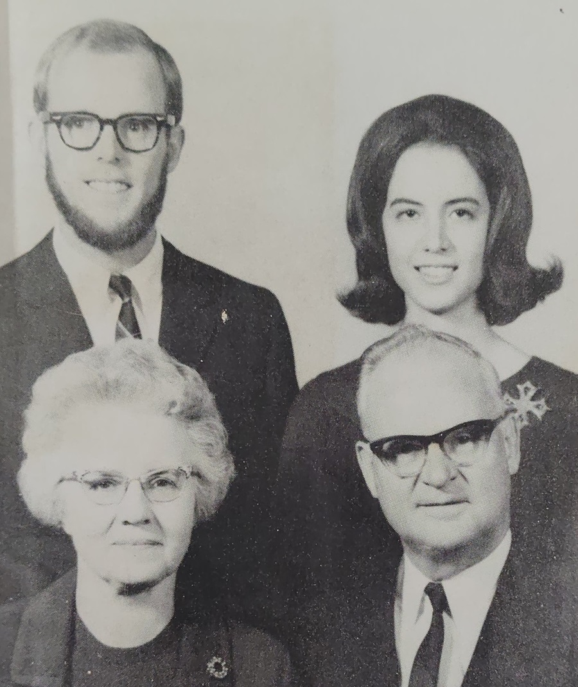
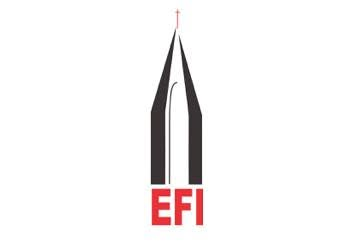

{{ event.year }}
{{ event.year }}
{{ event.title }}
{{ event.description }}
Taking the Gospel as far and as deep as possible, equipping them to fulfil their unique purpose through a powerful relationship with Jesus.
Union Biblical Seminary exists to train and equip people who are called to Christian ministry, theological education and faithful service in the Church and society.
Union Biblical Seminary has a rich history of preparing men and women for ministry through biblical teaching, spiritual formation, academic learning and practical ministry experience.
From its beginnings in Yavatmal to its present campus in Pune, UBS has continued to bring together Christians from diverse linguistic, cultural and denominational backgrounds.
From a small beginning in Yavatmal to a diverse theological community in Pune.
{{ event.description }}

In 1953, the Union Biblical Seminary was officially approved as a project of Evangelical Fellowship of India (EFI) and inaugurated at Yavatmal.
It was constituted by 11 mission and church groups through the initiative of Frank J. Kline of the Free Methodist Church.
This was in response to the need expressed by several church groups to send candidates for ministerial training. The seminary became a place where theological education, practical ministry and spiritual formation could come together.
In 1983, UBS was relocated to Pune to further integrate ministry experience with classroom learning.
Unity in diversity finds expression in everyday experience, grounded in the person of Jesus Christ.

The Evangelical Fellowship of India has played a key role in the establishment and growth of UBS, providing fellowship among evangelical Christians and serving as a means of unified action directed towards spiritual revival in the Church.
At the EFI executive meeting in Raipur in 1953, Union Biblical Seminary was approved as an EFI project.
Remembering the men and women who helped shape the early journey of Union Biblical Seminary.
{{ pioneer.description }}
UBS represents evangelical Christians from major Indian ethnic, linguistic and cultural groups, as well as from other countries.
Its faculty, staff and students come from various cultural, regional, language backgrounds and church traditions. This diversity creates opportunities for cultural interchange, learning and interdenominational understanding.
Continuing a legacy of biblical faithfulness, theological excellence and Christ-like formation.
Connect With UBS →{{ selectedTimelineEvent.description }}